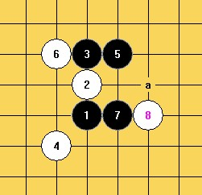
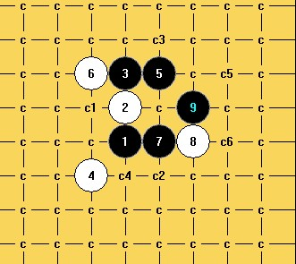
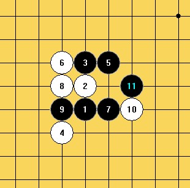

4打1-1.rar4打1-2.rar
4打1-1.rar4打1-2.rar由于棋谱较大，进行了删减，如下：
图一
图二
图三
图四
1打.rar2打.rar3打-C1.rar3打-C2.rar［ 逆刃 于 2012-2-22 8:23:21 时奖励此帖[金币加 100 威望加1］
［ 逆刃 于 2012-2-22 8:23:27 时花20金币送鲜花一朵］
［ 于 2012-2-22 10:07:11 时花20金币送鲜花一朵］
［ 于 2012-2-22 10:08:48 时花20金币送鲜花一朵］
［ 于 2012-2-22 10:08:50 时花20金币送鲜花一朵］
［ 于 2012-2-22 10:08:52 时花20金币送鲜花一朵］
［ 于 2012-2-22 10:08:56 时花20金币送鲜花一朵］
［ 于 2012-2-22 10:08:58 时花20金币送鲜花一朵］
［ 冰雪笑醉 于 2012-2-23 12:43:49 时花20金币送鲜花一朵］
［ 冰雪笑醉 于 2012-2-23 12:43:51 时花20金币送鲜花一朵］
［ 冰雪笑醉 于 2012-2-23 12:43:53 时花20金币送鲜花一朵］
［ 冰雪笑醉 于 2012-2-23 12:43:54 时花20金币送鲜花一朵］
四打棋谱较大，单独上传：
［ 于 2012-2-22 10:09:19 时花20金币送鲜花一朵］
［ 冰雪笑醉 于 2012-2-23 12:44:49 时奖励此帖[金币加 100 威望加1］
这个6是最强防守，棋谱很大，从后面往前拆分：
最强20的图谱：
其他强20：
最强18：
其他较强18手：
最强18.rar18-2.rar18-3-2.rar18-4.rar
17手关键：
17.rar［ 于 2012-2-22 10:09:37 时花20金币送鲜花一朵］
［ 于 2012-2-22 10:09:58 时花20金币送鲜花一朵］
［此帖子已被 冰雪笑醉 在 2012-2-23 12:46:07 编辑过］
最强16：
其他强16：
16-2.rar16-3.rar16-4.rar16-5、6.rar16-7.rar其他强16.rar必胜的15手，关键！！！
必胜的13手，关键！！！
三路强12：
（最强）
（次强）
（较强）
关键的是11手，曾经困扰我很久……
10手后的思考：
8手的变化：
7：
［ 于 2012-2-22 10:10:37 时花20金币送鲜花一朵］
4打图谱和总图谱：
到此，这个弱4四打地毯完毕，由于时间关系，谱中难免会有错漏，望大家提出意见，加以修正，感谢！！！
我用了大约两周的时间做寒星谱，其他的4多数三打已经完成，由于做的不够彻底完整，所以这次没有一次发，等以后做完了再和大家共享！！！
地毯的过程是漫长和痛苦的，这犹如一场自我的战争，多少个日日夜夜，一个人，两套软件（黑石和终结者），笔记本电脑，一次次一遍遍的拆解着一个个未知的得点，有时会觉得很绝望，而有时又会柳暗花明，这是一条孤独而漫长的路……
因为热爱，所以坚持；因为坚持，所以快乐，所以觉得无意中诞生了意义！棋局是无限的，一个人的力量永远也拆不完，所以我来到了这里，向大家请教学习，一起交流研究五子棋，一起获得快乐和惊喜！
加油！为自己，也为每一个人在地毯路上努力着的朋友！！！……
［ 屏蔽 于 2012-2-22 8:54:26 时奖励此帖[金币加 100 威望加1］
［ sonix 于 2012-2-22 9:11:39 时花20金币送鲜花一朵］
［ sonix 于 2012-2-22 9:11:42 时花20金币送鲜花一朵］
［ 于 2012-2-22 10:05:24 时花20金币送鲜花一朵］
［ 于 2012-2-22 10:05:26 时花20金币送鲜花一朵］
［ 于 2012-2-22 10:05:29 时花20金币送鲜花一朵］
［ 于 2012-2-22 10:05:32 时花20金币送鲜花一朵］
［ 于 2012-2-22 10:05:35 时花20金币送鲜花一朵］
［ 于 2012-2-22 10:05:37 时花20金币送鲜花一朵］
［ 于 2012-2-22 10:05:40 时花20金币送鲜花一朵］
［ 于 2012-2-22 10:05:43 时花20金币送鲜花一朵］
［ 第五象限 于 2012-2-22 10:59:03 时花20金币送鲜花一朵］
［ 山城刀客 于 2012-2-22 19:25:03 时花20金币送鲜花一朵］
［ 山城刀客 于 2012-2-22 19:23:30 时花20金币送鲜花一朵］
［ 山城刀客 于 2012-2-22 19:31:10 时花20金币送鲜花一朵］
感谢棋道元提出的问题，我仔细看了确实存在盘端和长链的问题，换了一个9正在拆，谢谢大家！！！
非常 感觉刀客，本来以为四打寒五应该很容易杀，也没去想过后面会出现何种局面，随手也很可能给出这个5，但是即使是拆解，都发现问题很多，难度很大。仅上个帖子的各种白16防，我计算了下你所花的时间,从提出到解答，所用七个小时。真的很厉害！感谢分享！
［ 山城刀客 于 2012-2-22 19:29:28 时花20金币送鲜花一朵］
关于C2的8路变化，我已经做了修正，再次感谢棋元道，图谱如下：


其中，最强的10C1路和四打最强的8C1路同型，棋谱已经发过了，只发其他各路的变化：

8-2修正.rar［ 自来水 于 2012-2-22 19:40:41 时花20金币送鲜花一朵］
T1.rar［ 山城刀客 于 2012-2-22 20:28:18 时花20金币送鲜花一朵］
发现对称位置的4有盘端问题...LZ有时间可以顺便看看
［ 山城刀客 于 2012-2-22 20:38:17 时花20金币送鲜花一朵］
修正的8-2杀不了

［ 逆刃 于 2012-2-22 21:10:13 时奖励此帖[金币加 100 威望加1］
请上图 。- - 我就说你怎么没上图啊。。。
［此帖子已被 蹲街丶式寂寞 在 2012-2-22 20:46:58 编辑过］
 棋元道 你怎么就那么小气。一次都不发个什么有看点的帖子了。难怪威望低啊。请网站管理员转移一个威望给棋元道 吧 。扣我的。
棋元道 你怎么就那么小气。一次都不发个什么有看点的帖子了。难怪威望低啊。请网站管理员转移一个威望给棋元道 吧 。扣我的。
记得教我斗地主一些技巧。
［此帖子已被 蹲街丶式寂寞 在 2012-2-22 20:55:04 编辑过］
［ 蹲街丶式寂寞 于 2012-2-22 21:40:41 时花20金币送鲜花一朵］
关于8的C2路，目前可以确定，a1、a2的9都是必胜的，我正在拆解猜想中的a3:
［ 蹲街丶式寂寞 于 2012-2-22 22:00:16 时花20金币送鲜花一朵］
 寒星平时几乎没下过~
寒星平时几乎没下过~
平时也没拆过棋，。嘿嘿，谢谢山城刀客！学习了~